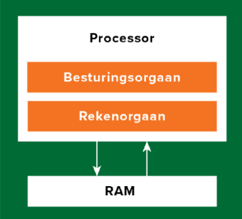

Het moederword is de grootste hardware-interface in de computer. Er zitten allerlei chips, verbindingen en aansluitpunten voor onderdelen op gemonteerd. Het moederbord zorgt ervoor dat alle onderdelen van het apparaat met elkaar verbonden zijn. Als een onderdeel niet is aangesloten op het moederbord, dan werkt het onderdeel ook niet.
Elke computer heeft een processor (CPU) en het RAM (interne geheugen). De CPU en de RAM wisselen data en instructies uit, hierbij komt de bus om het hoekje kijken. Binnen de bus zijn verschillende onderdelen. Als eerste heb je de adresbus, de adresbus heeft de functie om een bepaalde geheugencel uit het RAM aan te roepen. Als tweede heb je de control bus, deze bestaat uit twee ‘wires’. De enable wire zorgt ervoor dat de data die uit het RAM komt naar de CPU kan worden gestuurd. De set wire schrijft de bestaande gegevens van de geheugencel over. Als laatste heb je de databus, deze zorgt ervoor dat de opgeslagen data die in het RAM staat naar de CPU wordt verstuurd.
